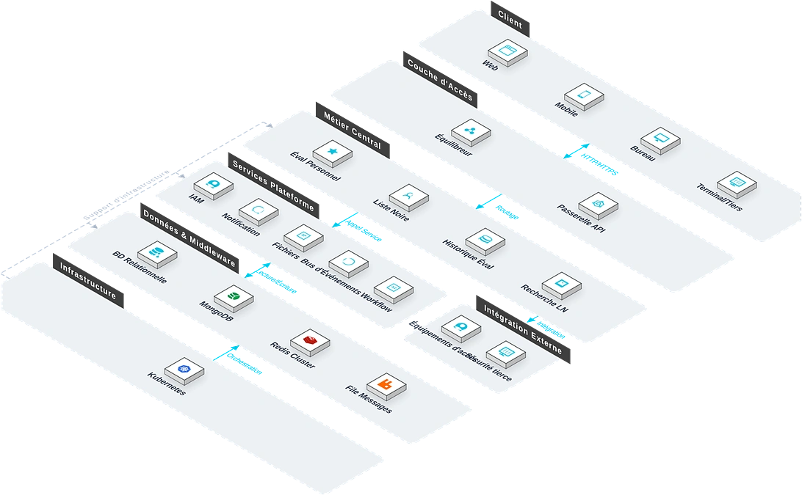

Le Système de Liste Noire est une plateforme d'évaluation unifiée des personnes/entités à risque, de gestion de liste noire et d'interdiction d'accès. Face à la difficulté d'identifier au préalable les risques de crédit et les risques de sécurité lors de l'embauche, de la collaboration fournisseurs et de l'accès au site, le système utilise l'évaluation multi-dimensionnelle, la gestion de liste noire à plusieurs niveaux et le moteur de correspondance en temps réel pour identifier et bloquer automatiquement les sujets à haut risque.

Caractéristiques Clés
Le système couvre trois modules : évaluation, liste noire et interception d'accès, formant une ligne de contrôle unifiée.
Évaluation du Personnel
Évaluation et notation multi-dimensionnelles des ouvriers (performance, compétences, coopération), avec taux de présence auto-calculé et score composite.
Liste Noire du Personnel
Les personnes ayant de graves infractions, un mauvais crédit ou des compétences insuffisantes sont inscrites sur la liste noire et synchronisées entre projets.
Interception d'Accès
Les terminaux de reconnaissance faciale/plaque aux portails, tourniquets et parkings comparent la liste noire en temps réel, interceptant personnes et véhicules à haut risque en millisecondes avec alertes graduées.
Architecture du Système
Architecture du Système

Architecture agrégation multi-sources + correspondance temps réel : saisie manuelle, import en lot, synchronisation API et terminaux de reconnaissance faciale/plaque convergent vers le service de gestion de listes ; Redis Cluster cache les listes chaudes pour une correspondance en millisecondes ; un service de niveau de risque évalue le niveau et déclenche les alertes SignalR en temps réel ; cinq scénarios (embauche, collaboration, visiteurs, accès, parking) intègrent le moteur de correspondance.
Scénarios d'Application
Adapté à l'évaluation multi-dimensionnelle du crédit, à l'interdiction d'accès via liste noire, au contrôle des véhicules et au partage inter-projets.

Évaluation Multi-Dimensionnelle
Les taux de présence sont auto-calculés et combinés avec les scores de performance, compétences et coopération pour générer un score de crédit composite.

Interdiction d'Accès
Les terminaux faciaux aux portails et tourniquets comparent la liste noire en temps réel, interceptant les personnes à haut risque en millisecondes.

Contrôle Véhicules
Les terminaux de reconnaissance de plaque au parking comparent la liste noire automatiquement, bloquant les véhicules à haut risque.

Partage Inter-Projets
Gestion unifiée de la liste noire au niveau groupe avec synchronisation inter-projets, empêchant le ré-onboarding.
Avantages et garantie
Convergence de données multi-sources
Prend en charge la saisie manuelle, l’importation en masse, la synchronisation par API et l’accès de données multiples via des terminaux de reconnaissance faciale/de plaque d’immatriculation, pour constituer un pool de données de liste noire unifié.
Comparaison en temps réel à l’échelle de la milliseconde
Les listes de données à accès fréquent sont mises en cache sur la base de Redis Cluster, le temps de réponse de la comparaison atteint l’échelle de la milliseconde, sans affecter l’efficacité de passage des contrôles d’accès et des tourniquets.
Intégration de la gestion des risques dans tous les scénarios
Le moteur de comparaison est profondément intégré dans cinq scénarios : recrutement, partenariat, visiteurs, contrôle d’accès et stationnement, pour une identification des risques sans angle mort.
Interconnexion inter-systèmes
Connexion transparente avec les systèmes de contrôle d’accès, de gestion des visiteurs, de gestion du personnel et d’approvisionnement, pour une gestion unifiée des risques sur l’ensemble de la chaîne d’activité.
Conformité de la sécurité des données
Stockage chiffré des données, gestion des autorisations par niveaux, journaux d’audit complets prenant en charge la traçabilité conforme et les contrôles réglementaires.
Configuration flexible des règles
Prend en charge la personnalisation des règles d’alerte en fonction du niveau de risque, de la catégorie de personnel et de la fenêtre temporelle, s’adaptant aux stratégies de contrôle de différents projets.
Étude des besoins
Nous étudions en profondeur les besoins de gestion des risques de l’entreprise et l’architecture des systèmes existants, et structurons les sources de données de la liste noire et les scénarios de comparaison.
Déploiement du système
Prend en charge le déploiement local et le déploiement sur cloud, permettant une intégration et une connexion rapides avec les équipements de contrôle d’accès/de pointage existants.
Formation et mise en ligne
Nous proposons une formation différenciée pour les administrateurs et les utilisateurs finaux, afin de garantir la maîtrise de la maintenance des listes, du traitement des alertes et des opérations courantes.
Maintenance continue
Support technique distant 7j/7 et 24h/24, inspections régulières du système et itérations fonctionnelles, optimisation continue de la stratégie de synchronisation de la base de listes noires.
Sécurité des données
Stockage et transmission chiffrés des données des listes, gestion des autorisations par niveaux, enregistrement complet des journaux d’opérations, prenant en charge l’audit conforme.
Mise à niveau et extension
Prend en charge l’intégration flexible de nouvelles sources de comparaison et de nouveaux canaux d’alerte, étendant la couverture des scénarios de gestion des risques selon les besoins des projets.